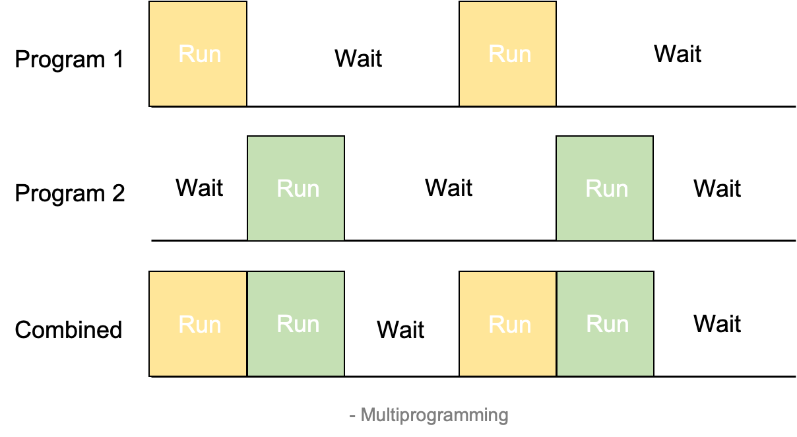

[OS]1. Operating System Overview
운영체제 정리 첫 번째 글, Overview
1. Operating System Overview
운영체제란?
컴퓨터 시스템의 자원들을 효율적으로 관리하며, 사용자가 컴퓨터를 편리하고 효과적으로 사용할 수 있도록 환경을 제공하는 소프트웨어
운영체제가 하는 작업
- Process 관리(CPU 관리)
- Main Memory 관리
- 파일 관리
- I/O 시스템 관리
- 디스크 관리(Secondary Storage)
- Networking, Command-Interpreter System …
Key Interfaces
- Instruction Set Architecture(ISA)
- 컴퓨터가 따를 수 있는 언어 instruction
- 하드웨어와 소프트웨어 사이의 경계 인터페이스
- Application Binary Interface(ABI)
- 프로그램간 휴대성을 위함
- System call Interface를 정의
- Application programming Interface(API)
- High-level language 라이브러리
Kernel
- 메인 메모리에 들어가 있는 Operating System - OS의 핵심적인 부분
- Program과 Data의 양이 많이 들어갈 수 있도록 OS의 핵심적 기능만 메인 메모리에 적재
Programming 종류
1. Uni-programming
 프로세서(CPU)는 I/O가 종료될 때 까지 기다림. 한번에 한가지 프로그램만 실행
프로세서(CPU)는 I/O가 종료될 때 까지 기다림. 한번에 한가지 프로그램만 실행
2. Multi-programming

I/O interrupt 발생 시 다른 Job으로 Switch하여 실행
- 장점: CPU가 기다리는 시간이 줄어듦
- 단점: 큰 메모리 공간 필요
3. Time Sharing
워드 프로세서, Web Browser와 같은 대화식 프로그램을 실행할 때 사용되는 multiprogramming 기법
시간 단위로 번갈아가며 실행: Response Time(반응 시간) 감소
- Multi Programming과 Time Sharing의 차이
두 방법 모두 현대 컴퓨터에서 사용함
| Multi-programming | Time-sharing | |
| Used for | Batch, Back-ground processing | Interactive, Foreground processing |
| Better | 처리량 | 응답시간 |
그 외 개념, 혹은 추후에 정리할 내용들
- 처리량(Throughput)
- 단위 시간당 처리되는 job의 개수
- Process Scheduling
- 어떤 프로그램을 CPU(프로세서)가 다음에 실행할 지 정함
- Command-Interpreter System
- User가 OS에게 명령을 내리는 방법 with CLI,GUI
- System Call
- 프로그램이 OS에게 해야할 일을 말하는 수단